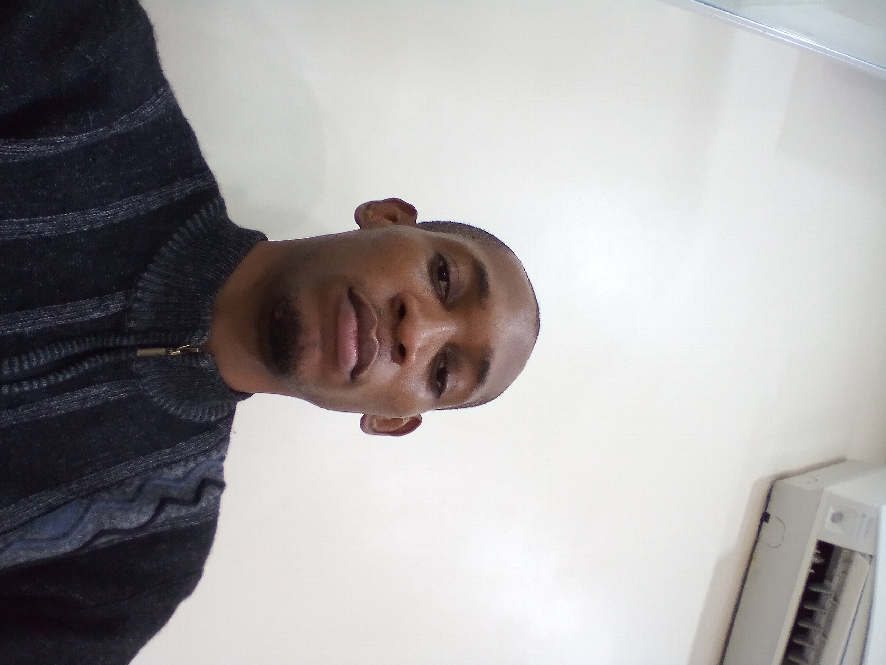

Anietie Dominic
IT Support

Objective Statement
Dedicated IT Support Specialist with over five years of experience in system installation, troubleshooting, and customer support.
Proven track record in improving system efficiency, reducing client complaints, and enhancing service delivery.
Skilled in both hardware and software support.
Education
- HND in Computer Science, XZY (2014 - 2017).
Work experience
-
IT consultant - Behind Brain Technology And Consultant
2021 - 2024
- Supervised hardware and software inventory, ensuring proper arrangement and documentation.
- Implemented efficient storage and retrieval systems for IT equipment.
- Upported proper arrangement and functionality of devices and related inventory.
-
IT Support - Cakes and Cream
2019-2021
- Provided support to users by ensuring network and peripheral devices operated seamlessly.
- Delivered clear and concise technical solutions to non-technical users, fostering trust and satisfaction.
- Conducted data backups and restorations, prioritizing user data security and availability.
-
IT Assistant - Inlaks Computer Limited
2018 - 2019
- Delivered on-site and remote support to clients, resolving service requests and technical issues within SLA timeframes
- Enhanced customer satisfaction by ensuring optimal ATM performance through preventive maintenance.
- Supported internal teams by resolving software and hardware issues, enabling smooth business operations.
Skills
- Problem-solving and critical thinking
- Conflict resolution and negotiation
- Familiarity with CRM tools
- Attention to detail and accuracy
- Time management and efficiency
Achievements
- Streamlined operational workflows, reducing retrieval time by 15%.
- satisfaction scores by addressing 95% of issues within SLA limits.
- Trained and mentored team members, enhancing overall service efficiency by 20%.
Awards and Certifications
Others